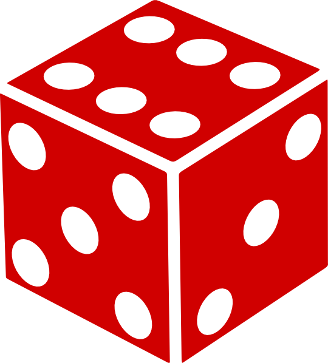
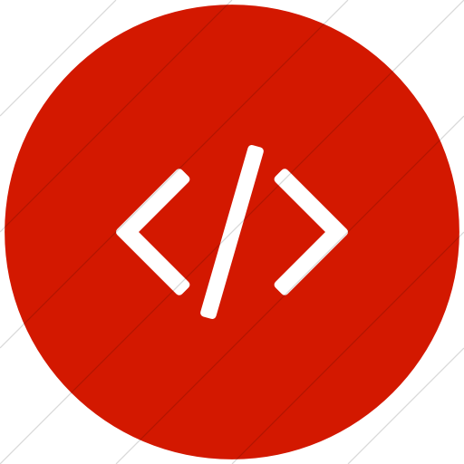

RPG's fizeram grande parte da minha vida, sejam os JRPG's (como Persona, SMT ou Pokémon)
quanto os de mesa (D&D, Call of Chtulhu, etc), que até mesmo hoje em dia, busco espaço nos meus dias para
só jogar um pouco de Persona, ou ter a sessão de D&D semanal.
O mesmo pode ser dito sobre cultura da internet no geral. Memes, animes, mangas e atualmente vtubers são coisas
que passo um bom tempo assistindo/lendo como um passa-tempo. E algo aleatório, mas minha cor favorita é vermelho.
Musica é algo que considero

Programação é algo que eu sempre busquei aprender durante minha vida, até mesmo antes de eu entrar no PROA ou na faculdade,
sendo auto didata em Java. Não só isso, mas inglês sempre foi uma lingua que fui apaixonado, e sonho em ir morar no exterior,
e por esse motivo sempre tento melhora-lo. Um hobby que gosto muito que não seja jogar, é cozinhar, algo que busco sempre ir
me aprimorando também.